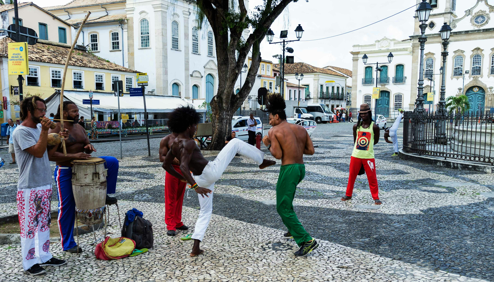

Venha conhecer o Pelourinho!
O Pelourinho, localizado no centro histórico de Salvador, Bahia, é um dos mais famosos e charmosos bairros turísticos do Brasil. É conhecido por suas ruas de paralelepípedos, arquitetura colonial colorida, igrejas históricas e uma vibrante vida cultural.
O Pelourinho é um Patrimônio Mundial da UNESCO e possui uma rica história que remonta ao período colonial, quando Salvador era a primeira capital do Brasil. O bairro foi um importante centro de comércio e cultura, e hoje é um local popular para turistas que desejam explorar a herança cultural da cidade.
Entre as atrações do Pelourinho estão:
- Igreja de São Francisco: Uma das igrejas mais ricas em detalhes barrocos do Brasil, com um impressionante interior dourado.
- Fundação Casa de Jorge Amado: Um museu dedicado ao famoso escritor baiano, Jorge Amado, com exposições sobre sua vida e obra.
- Praça Terreiro de Jesus: Um ponto central do Pelourinho, cercado por igrejas e edifícios históricos.
- Museu Afro-Brasileiro: Que celebra a herança africana na cultura brasileira.